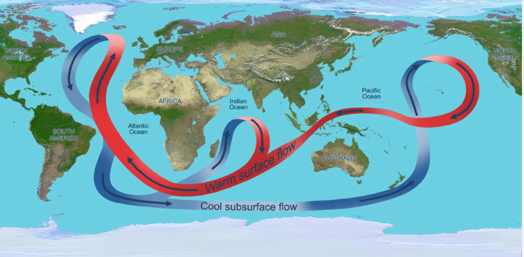
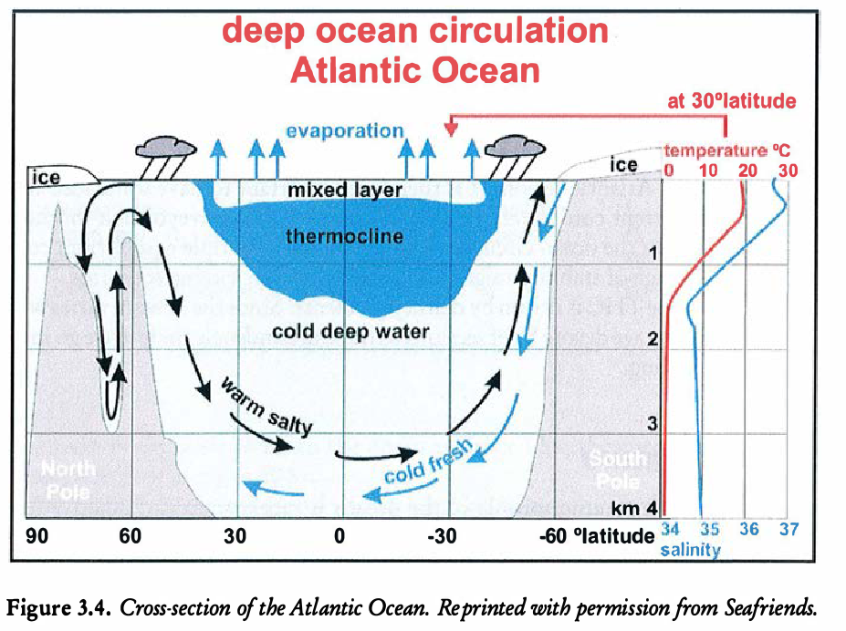
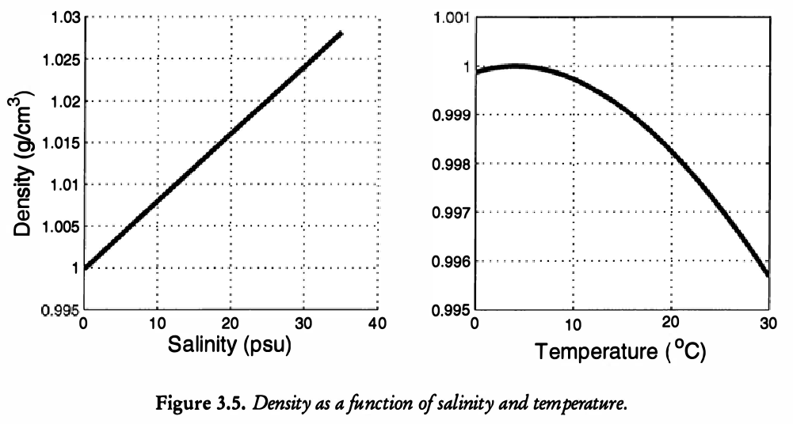
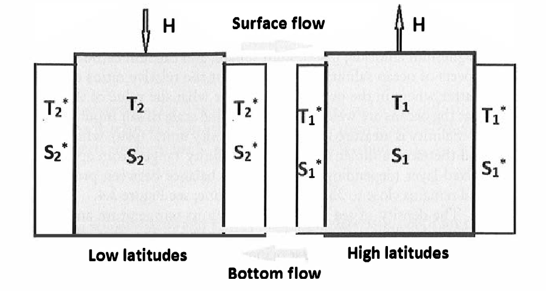

19 Basic models of the ocean
19.1 Terminology and context
The ocean plays a significant role in regulating the Earth’s climate, as it acts as a massive heat sink and helps to distribute heat and moisture around the planet. In addition, carbon dioxide is water soluble, and through precipitation and wave motion, is transferred into the oceans. Thus the ocean acts as a sink, absorbing large amounts of this greenhouse gas from the atmosphere.
The thermohaline circulation (THC), also known as the global ocean conveyor belt, is a complex ocean circulation pattern that is driven by differences in water temperature and salinity. It is an important component of the Earth’s climate system, as it helps to distribute heat and other properties throughout the planet’s oceans.
The thermohaline circulation is driven by the sinking of cold, dense water in the polar regions, which then spreads out and flows towards the equator. As the water warms and becomes less dense, it rises to the surface and returns to the poles, creating a continuous loop of ocean currents. The role of salinity in driving the thermohaline circulation is due to the fact that the dissolved salts in seawater increase its density.
This circulation pattern has a significant impact on global climate, as it helps to regulate the exchange of heat and other properties between the oceans and the atmosphere. Changes in the thermohaline circulation, such as those caused by global warming, can have far-reaching effects on the planet’s climate and weather patterns.

19.2 Temperature
In regards to the temperature, the ocean can be divided into three layers.
The top layer is thin (on the order of metres) and is heated from the Sun. Mixing is a dominant effect due to wind and waves, and so the temperature in this region is mostly constant.
The thermocline region is the intermediate layer. Here, the temperature decreaes approximately linearly.
The deep abyssal zone comprises 98% of the total volume of the oceans. The temperature in this region is mostly constant, and a few degrees above freezing.
Within the intermediate region, the temperature can be modelled by an advection diffusion equation, \[ \frac{\mathrm{\partial}T}{\mathrm{\partial}t} + w \frac{\mathrm{\partial}T}{\mathrm{\partial}z} = \kappa \frac{\mathrm{\partial}^2 T}{\mathrm{\partial}z^2}, \tag{19.1}\] where \(w\) is the upswelling velocity and \(\kappa\) is the diffusion coefficient of the fluid.
Let us assume that the temperature in this region is near steady state and that the upwards velocity is constant. Then we integrate the ODE to find \[ T(z) = T_0 + T_1 \mathrm{e}^{-z/z^*}, \] where \(T_0\) and \(T_1\) are constants. From (Kaper and Engler 2013), the typical orders for the parameters are \(\kappa \sim 10^{-2} \,\mathrm{m}^{2} \,\mathrm{s}^{-1}\) and \(z^* \sim 10^2 \, \mathrm{m}\), so \(w \sim 10^{-4} \,\mathrm{m} \,\mathrm{s}^{-1}\), which is quite slow.

19.3 Salinity
Salinity is a key component in the oceans since the salts have a large effect on the water density (which consequently drives motion). Salinity is measured in psu or practical salinity units, which is a non-dimensional ratio of conductivities. In the mixed layer, the sainity ranges from 31-39 psu, and is about 35 in the abyssal zone. You can inspect the profile in Figure 19.2.

19.4 Two-box model of the ocean
Modelling the THC is a challenging task! In principal, this might involve the solution of multiple coupled PDEs for the flows and temperatures, which would then need to be solved on a very complicated domain. In addition, such models require a number of empirical equations of state (connecting density to temperature and salinity).
Toy models can be developed much more easily at the ‘systems level’ via box models.
19.5 A one-dimensional model (constant temperature)
Construction and assumptions of the box model.
We consider two boxes, labeled ‘1’ and ‘2’, respectively via subscripts. Box 1 corresponds to high latitudes (near poles) and Box 2 to low latitudes (near equator). Each box has a corresponding temperature, \(T_i\), and salinity, \(S_i\).
We assume (see above) that the strength of the exchange flow between the boxes is linearly proportional to their differences of temperature and salinity.
External wind forces and Coriolis effects are ignored.
We assume that in each box, there is an exchange of heat and salinity to the surrounding environment. For instance, salinity will exchange due to evaporation, precipitation, and runoff.
We assume that there is a positive salt flux \(H\) into Box 2 and a compensating salt flux \(-H\) out of Box 1.
An image of the box model is shown below.

The equations are given as follows.
\[ \begin{align} \frac{\mathrm{d}T_1}{\mathrm{d}t} &= c(T_1^* - T_1) + |q|(T_2 - T_1) \\ \frac{\mathrm{d}T_2}{\mathrm{d}t} &= c(T_2^* - T_2) + |q|(T_1 - T_2) \\ \frac{\mathrm{d}S_1}{\mathrm{d}t} &= -H + d(S_1^* - S_1) + |q|(S_2 - S_1) \\ \frac{\mathrm{d}S_2}{\mathrm{d}t} &= H + d(S_2^* - S_2) + |q|(S_1 - S_2) \end{align} \tag{19.2}\]
The symmetry in the above equations suggests we should re-write the temperature and salinity with respect to averaged values. In particular, notice that if we add the two first equations, we see that the steady-state temperatures satisfy \[ T_1 + T_2 = T_1^* + T_2^*, \] and therefore the average temperature in the two ocean regions will tend to the average of the basin regions. A similar conclusion is made for the salinities. It is then sensible to write all temperature and salinity in terms of this baseline scenario. So let us write \[\begin{align} T_1 &= \frac{1}{2}m + U_1 \\ T_2 &= \frac{1}{2}m + U_2 \end{align}\] where \(m = T_1^* + T_2^*\). Then the first equation becomes \[\begin{align} \frac{\mathrm{d}U_1}{\mathrm{d}t} &= c\left(T_1^* - U_1 - \frac{1}{2}m\right) + |q| (U_2 - U_1)\\ &= c\left(- T^* - U_1\right) + |q| (U_2 - U_1). \end{align}\] where \(T^* = \frac{1}{2}(T_2^* - T_1^*)\).
The analgous manipulations are done to the quantities for the salinity. In the end, if we (confusingly) re-write \(T\) for \(U\), then we obtain \[ \begin{align} \frac{\mathrm{d}T_1}{\mathrm{d}t} &= c(-T^* - T_1) + |q|(T_2 - T_1) \\ \frac{\mathrm{d}T_2}{\mathrm{d}t} &= c(T^* - T_2) + |q|(T_1 - T_2) \\ \frac{\mathrm{d}S_1}{\mathrm{d}t} &= -H + d(-S^* - S_1) + |q|(S_2 - S_1) \\ \frac{\mathrm{d}S_2}{\mathrm{d}t} &= H + d(S^* - S_2) + |q|(S_1 - S_2) \end{align} \tag{19.3}\]
Comparing the above to Equation 19.2, the main difference is that, in expressing the temperature and salinities with respect to the average values in the basin, we have eliminated two of the constants from the set \((T_1^*, T_1^*, S_1^*, S_2^*)\) now only into two constants \((T^*, S^*)\).
In the situation of zero salt flux. \(H = 0\), the above model reduces to Stommel’s box model studied in Chapter 20.
19.6 Analysis of a 1D model for the salinity
We make the following assumptions
- We assume that on the timescale of interest in the THC, the temperature of each box equilibrates quickly with the surrounding basin.
- The difference in temperatures between the two boxes is small; together with the top assumption, this implies that \(T_1(t) = -T^*\) and \(T_2(t) = T^*\).
- Salinity exchanges by negligible amounts with its surrounding basin, i.e. \(d = 0\)
This leaves us with \[\begin{align} \frac{\mathrm{d}S_1}{\mathrm{d}t} &= -H + |q|(S_2 - S_1) \\ \frac{\mathrm{d}S_2}{\mathrm{d}t} &= H + |q| (S_1 - S_2), \end{align}\] where \(q = k(2\alpha T^* - \beta(S_2 - S_1))\).
Now, the formulation for the salinities can be placed into a single equation for \(\Delta S = S_2 - S_1\), which satisfies \[ \frac{\mathrm{d}\Delta S}{\mathrm{d}t} = 2H - 2k|\alpha \Delta T - \beta \Delta S| \Delta S. \]
From here…
Non-dimensionalise
Study the equilibrium states and their stability
Discuss the tipping phenomena
19.7 References
This chapter was largely following Chap. 3 of (Kaper and Engler 2013).